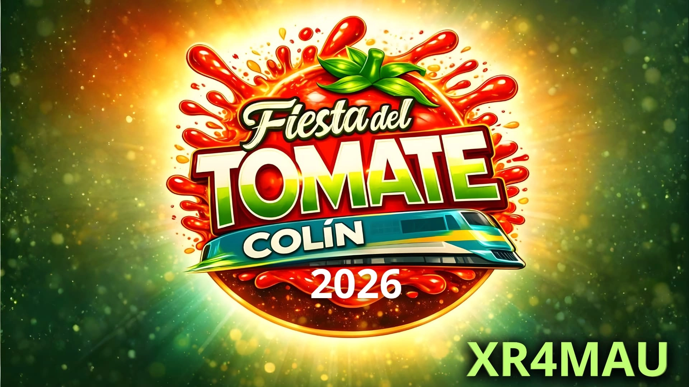

29-31 de Enero 2026

Fiesta del tomate, Colín 2026
Del 29 al 31 de Enero de 2026, se realizará la tradicional "Fiesta del Tomate" en la localidad de Colín, de la comuna de Maule, ubicada en la Región del Maule, Chile. Esta festividad es una celebración anual que rinde homenaje a la importancia del tomate en la agricultura local y en la gastronomía chilena.
Durante la fiesta, los visitantes pueden disfrutar de una variedad de actividades, incluyendo concursos de cocina, exhibiciones agrícolas, música en vivo y bailes tradicionales. Además, se llevan a cabo eventos culturales que resaltan las tradiciones de la región.
La Fiesta del Tomate es una oportunidad para que los agricultores locales muestren sus productos y para que los visitantes experimenten la cultura y la hospitalidad de la comunidad de Colín. Es un evento que atrae a turistas de diferentes partes del país y del extranjero, contribuyendo al desarrollo económico y turístico de la región.
COMO RADIOAFICIONADO REALIZARÉ ESTA ACTIVIDAD A UN SOLO CONTACTO CON EL INDICATIVO ESPECIAL "XR4MAU"
Estaré Activando en la Banda de 10 y 40 m HF